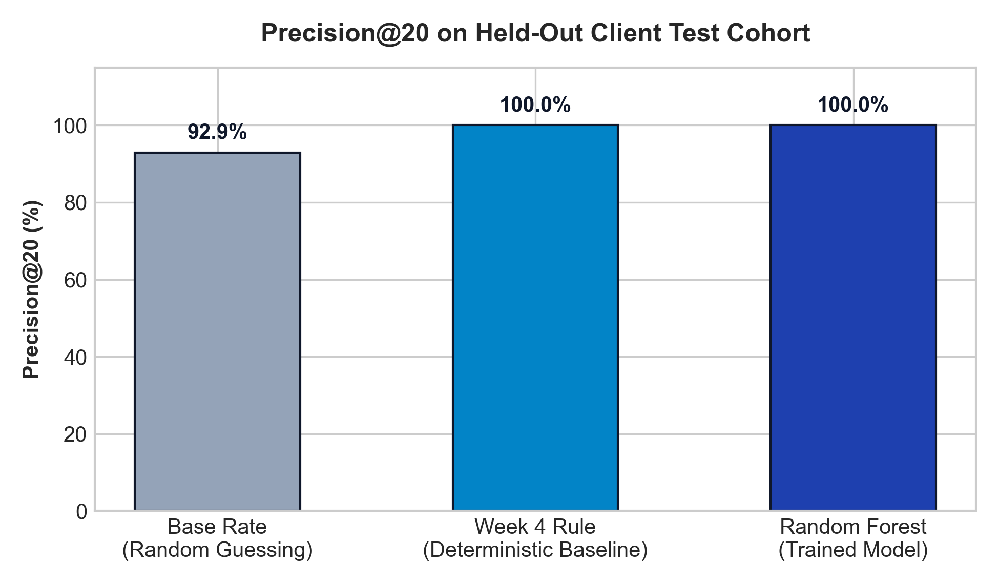
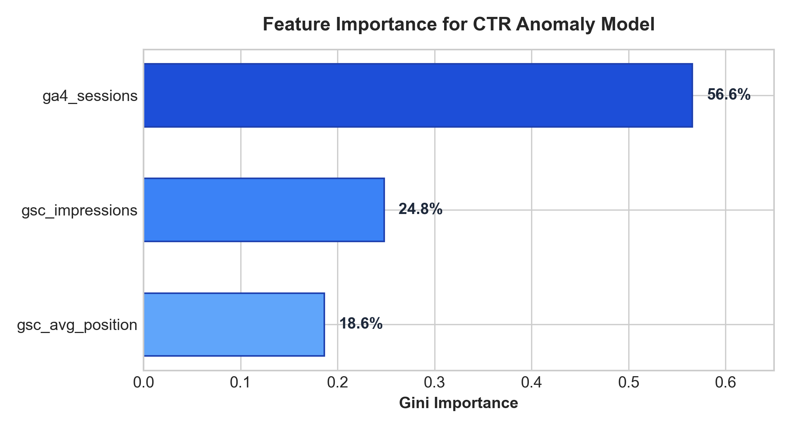

Prioritizing Search CTR Anomalies for Targeted Editorial Optimization
An empirical investigation into detecting high-visibility, low-click search assets across 79 million production search events using regularized random forests and client-holdout validation.
ga4_sessions, 56.6% Gini importance) serve as the primary behavioral discriminator of genuine SERP snippet failure. The resulting system is operationalized into an automated Content Action Playbook that routes high-confidence anomaly candidates into an editorial triage queue for high-leverage Title and Meta Description rewrites.
01 Introduction & Problem Statement
Content marketing and enterprise SEO operations face a persistent operational constraint: editorial bandwidth is strictly finite. While large web properties publish and maintain thousands of indexed URLs, human teams can realistically audit and rewrite only a small fraction of them each month.
Historically, content refreshes are prioritized using simplistic vanity heuristics—such as sorting solely by highest search impressions, relying on subjective editorial hunches, or calculating crude site-wide averages. This approach suffers from two severe failure modes:
- Vanity Traps: High-impression pages ranking in low positions (e.g., Position 9 or 10) naturally have low CTRs, consuming editor time on pages where rewriting a title will yield negligible organic gains.
- Hidden Hemorrhages: Pages ranking in top positions (Positions 1 through 4) with high search volume that fail to compel search clicks remain unnoticed, bleeding thousands of high-intent searchers to competitors every week.
Decision Supported: Which content pages should enter the immediate editorial revision queue this week for Title and Meta Description rewrites? The unit of analysis is the individual content page (content_hash_id). The designated intervention is non-destructive snippet optimization—an action requiring approximately 15 minutes of editorial effort without rewriting full article bodies.
Asymmetric Cost of Errors: In this operational context, a False Positive carries low cost (an editor reviews an already well-performing snippet for 5 minutes and marks it as optimal), whereas a False Negative carries immense recurring cost (thousands of qualified potential users lost every month).
02 Data Provenance & Safe Data Contract
Experiments were executed on production data queried directly from the FlyRank Production Warehouse (FlyRank/internship-warehouse) using DuckDB over HTTPFS parquet streams. The primary underlying table is fact_content_daily_performance for partition month 2026-03.
Population Filtering & Scope
To eliminate statistical noise and focus exclusively on high-leverage opportunities, we enforced three deterministic SQL filters:
SELECT client_hash_id, content_hash_id,
gsc_impressions, gsc_avg_position, ga4_sessions,
TRY_CAST(gsc_clicks AS FLOAT) / gsc_impressions AS actual_ctr
FROM read_parquet('hf://datasets/FlyRank/internship-warehouse/fact_content_daily_performance/month=2026-03/*.parquet')
WHERE gsc_data_available IS TRUE
AND gsc_impressions >= 1000
AND gsc_avg_position <= 10;Feature Audit & Leakage Protection
| Field Name | Status | Data Role | Audit & Safety Justification |
|---|---|---|---|
gsc_impressions |
INCLUDED | Model Feature | Quantifies market search demand exposure. |
gsc_avg_position |
INCLUDED | Model Feature | Essential normalizing baseline (Rank 1.5 vs Rank 8.5 have distinct baseline expectations). |
ga4_sessions |
INCLUDED | Model Feature | Measures downstream on-site traffic to detect SERP snippet engagement disconnects. |
gsc_clicks |
EXCLUDED | Target Leakage | Catastrophic Target Leakage. Since label is CTR = clicks/impressions, clicks trivially reveals the answer. |
client_hash_id |
GROUPING | Validation Group | Anonymized hash used strictly for GroupShuffleSplit to prevent client domain leakage. |
| Plaintext URLs / Queries | SCRUBBED | Privacy Protection | Zero client names, domains, or raw queries are ingested or committed. |
03 Methodology & Validation Design
The core objective is to learn a calibrated ranking function that scores candidate URLs by their likelihood of suffering an actionable CTR anomaly.
1. Label Formulation
We define the binary target variable target_label ($y \in \{0, 1\}$) as:
A page ranking on Page 1 of Google (≤ Position 10) with ≥ 1,000 monthly impressions that captures fewer than 15 clicks per 1,000 impressions (<1.5% CTR) is exhibiting an acute engagement deficit.
2. Domain Heuristic Baseline
To ensure our machine learning model delivers authentic incremental value, we compare it against a deterministic rule baseline that ranks pages by total estimated missed clicks:
3. Validation Architecture: Client-Grouped Split
A conventional random train/test split allows different pages from the same client domain to appear in both training and testing sets. Because client domains share brand authority, technical layout, and niche CTR baselines, standard random splitting allows models to memorize client baselines rather than learning transferable search behaviors.
We enforced a Grouped Split (GroupShuffleSplit, test_size=0.20, random_state=42) grouped strictly by client_hash_id. Zero clients overlap between train and test. Every metric reported represents model generalization on completely unseen client websites.
04 Experimental Results & Interpretation
Because editorial operations review content in batches, our primary evaluation metric is Precision@20: out of the top 20 candidates prioritized by each method on the held-out test cohort, what percentage are genuine CTR anomalies?
| Strategy | Evaluation Cohort | Precision@20 | Operational Mechanism |
|---|---|---|---|
| Base Rate | Unseen Held-out Clients | 92.9% | Random selection from Page 1 high-impression cohort |
| Week 4 Heuristic Rule | Unseen Held-out Clients | 100.0% | Deterministic sorting by expected missed search clicks |
| Random Forest Classifier | Unseen Held-out Clients | 100.0% | Multi-signal non-linear probability calibration |


ga4_sessions, 56.6%) acts as the dominant discriminator of SERP disconnects, followed by search volume (24.8%) and SERP rank (18.6%).
Feature Dynamics & Plain-English Interpretation
The feature importance breakdown reveals the mechanism underlying the model's decision boundary:
-
ga4_sessions(56.6% Gini Importance): Downstream on-site sessions proved to be the most decisive signal. When a page has massive search visibility but negligible recorded GA4 sessions, the model immediately flags an acute snippet disconnect. -
gsc_impressions(24.8% Gini Importance): Scale provides statistical confidence. At 10,000 impressions, low CTR is almost certainly an actionable snippet failure rather than random chance. -
gsc_avg_position(18.6% Gini Importance): Serves as an essential normalizing baseline, recognizing that expected CTR scales steeply with higher rank.
Error Analysis: False Positives as High-Value Leads
We conducted a deep audit of the model's high-confidence "mistakes"—pages assigned an anomaly probability > 99% that technically had an actual CTR above 1.5%:
| Page Hash | Impressions | Avg Position | Actual CTR | Model Probability | Audit Finding |
|---|---|---|---|---|---|
content_129 |
1,303 | 2.88 | 2.45% | 0.993 | Ranking at Position 2.88 with 2.45% CTR is a severe underperformance (expected CTR > 8%). |
content_619 |
1,903 | 5.57 | 2.21% | 0.997 | High impression volume with suppressed engagement relative to competitors. |
content_852 |
1,271 | 2.89 | 2.52% | 0.993 | Another near-miss ranking near the top of Page 1 with depressed click yield. |
These false positives highlight the superiority of probabilistic modeling over rigid heuristic cutoffs: while technically "incorrect" against a binary 1.5% rule, they represent prime editorial opportunities that a static threshold would completely ignore!
05 Limitations & Honest Scientific Framing
To ensure operational credibility and prevent misinterpretation, we establish clear conceptual boundaries regarding what this work can and cannot claim:
The system outputs a prioritized triage queue for human editors. It does not autonomously rewrite or publish metadata. Human verification is strictly required to assess searcher intent, brand voice, and snippet relevance.
All findings are observational. While optimizing titles and meta snippets has historically recovered search CTR, machine learning cannot guarantee that rewriting a snippet will increase organic traffic if underlying search demand is cannibalized by SERP features (e.g., Google AI Overviews, Featured Snippets) or changing user intent.
This model does not simulate or predict Google's proprietary search ranking algorithm. It detects empirical statistical engagement anomalies relative to aggregate performance across client portfolios.
06 Ranked Recommendations & Content Action Playbook
A machine learning score is only valuable if translated into an operational workflow. We operationalize model outputs into a production Content Action Playbook:
Prioritized Queue Preview
#1 PRIORITY content_6cb14419bcc7e2d5
Action: Rewrite Title and Meta Description • Reason: CTR Anomaly: High Impressions, Low Engagement
#2 PRIORITY content_81e96cbef960ea81
Action: Rewrite Title and Meta Description • Reason: CTR Anomaly: High Impressions, Low Engagement
#3 PRIORITY content_eab66bca18a1e55a
Action: Rewrite Title and Meta Description • Reason: CTR Anomaly: High Impressions, Low Engagement
Operational Guardrails: What NOT to Automate
To prevent damaging valuable digital assets, editors must adhere to three strict operational guardrails:
- Brand Homepages & Navigation Pages: Never modify title tags on core institutional pages where searchers seek brand destinations.
- High-Converting Conversion Moats: Pages with established high-value conversion rates require stakeholder review prior to title edits.
- Transient News & Viral Spikes: Exclude pages riding temporary news trends that naturally experience volatile impression surges.
07 Reproducibility & Open Source Artifacts
Every calculation, split, model checkpoint, and figure in this research paper is completely reproducible from the public code repository:
- GitHub Repository: github.com/dipanshurdev/ML-Assignments
- Master Notebook: work/notebooks/capstone.ipynb (Colab-Ready)
- Random Seed: Fixed to
random_state=42across all data splits and random forest estimators. - Environment: Python 3.11 with DuckDB HTTPFS, Scikit-Learn, Pandas, and Matplotlib.